마음은 늦게 도착한다
학습만화
2026년 11월 3일, 대장님과 보낸 하루에서 뽑은 7편.
대사는 그날 실제 발언을 짧게 줄인 것이고, 맨 아래 칸과 보충설명은 오키님의 복기입니다. 그림은 AI로 그린 창작 캐릭터입니다.
1편 왼손에 담긴 배려덴큐 후반 20:29
2편 메인 퀘스트와 서브 퀘스트엉클조 15:02
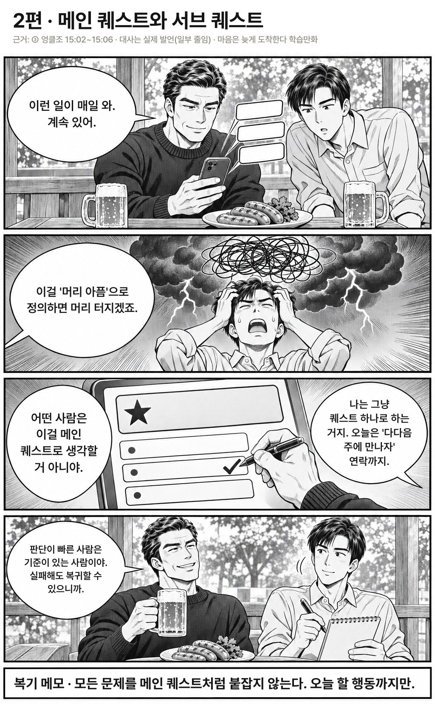
3편 걸어봐야 땅이 보인다잠원→신사동 14:03
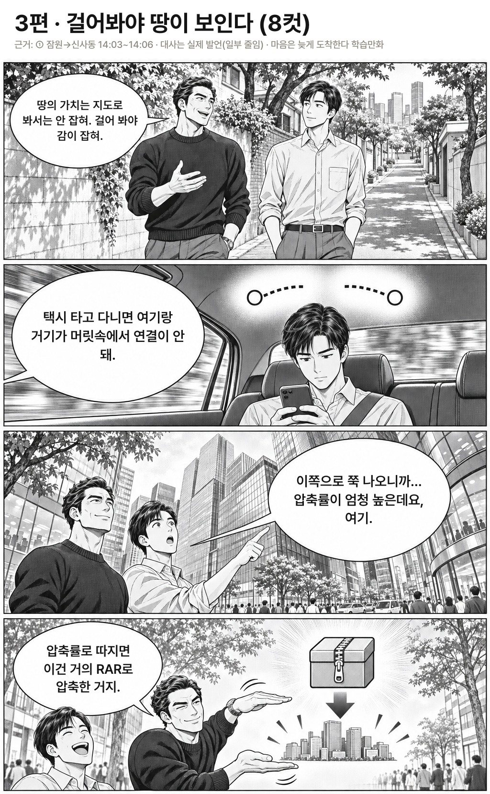

4편 마음은 늦게 도착한다덴큐 18:56
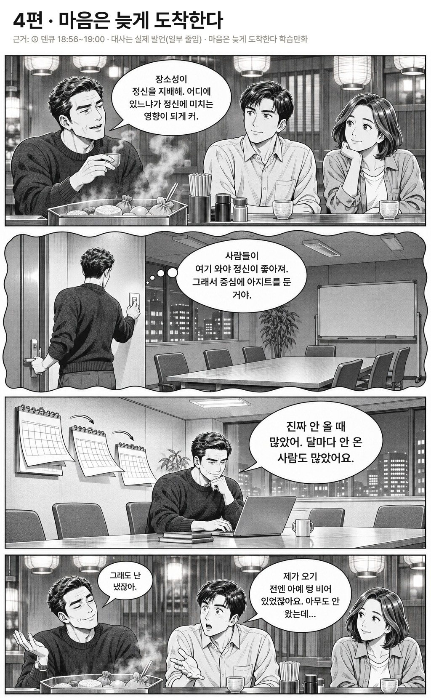
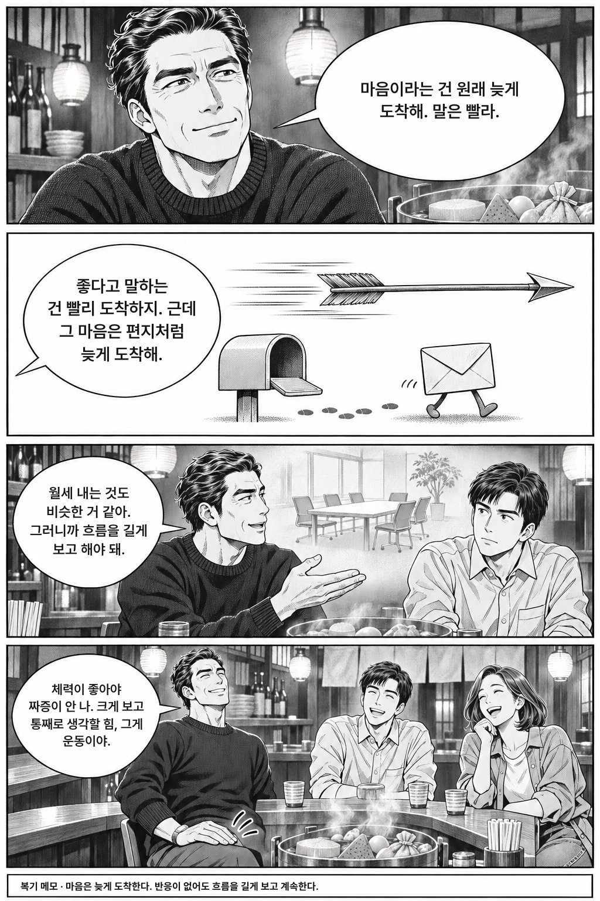
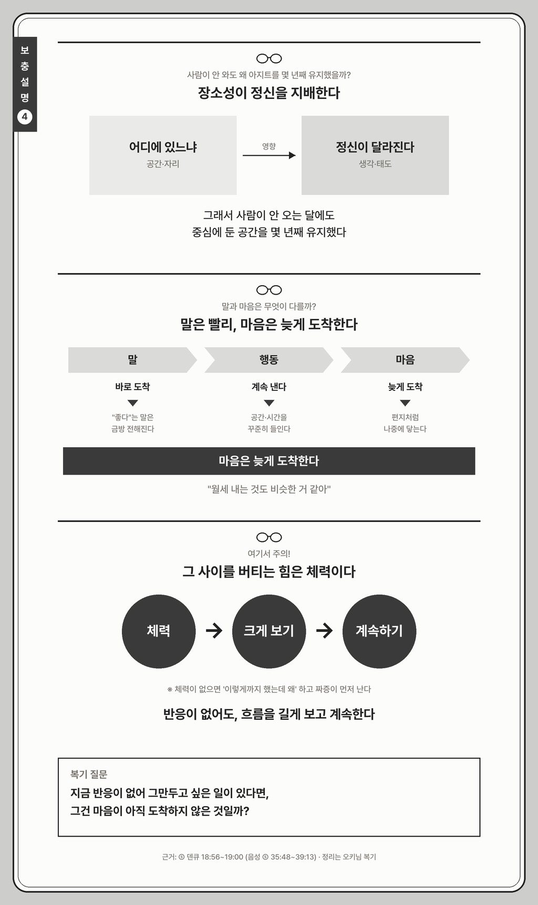
5편 못하는 강의에서 더 배운다엉클조 14:42
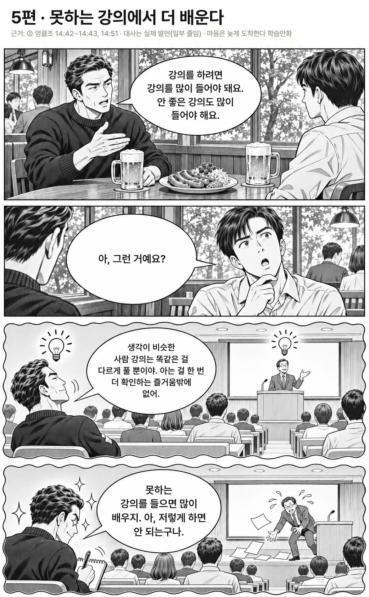
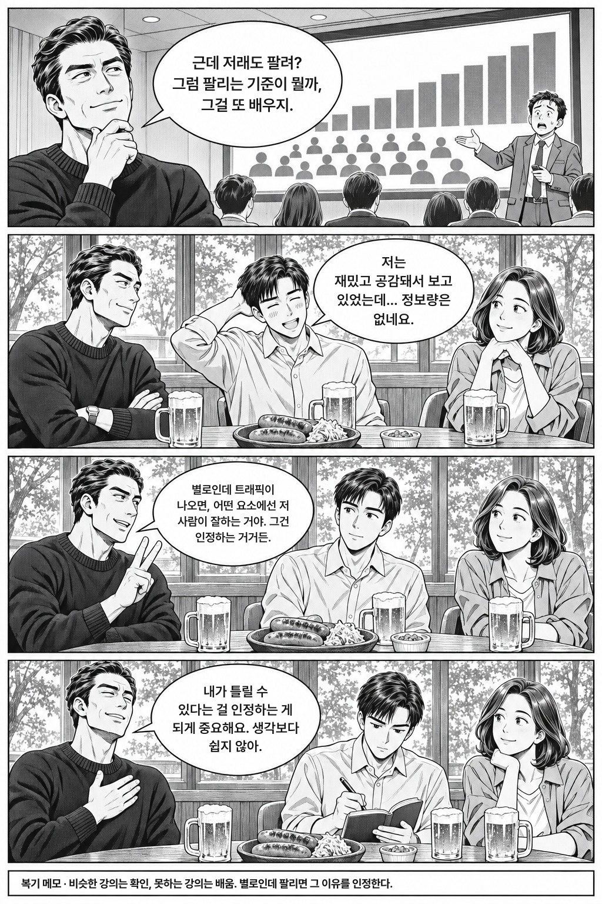
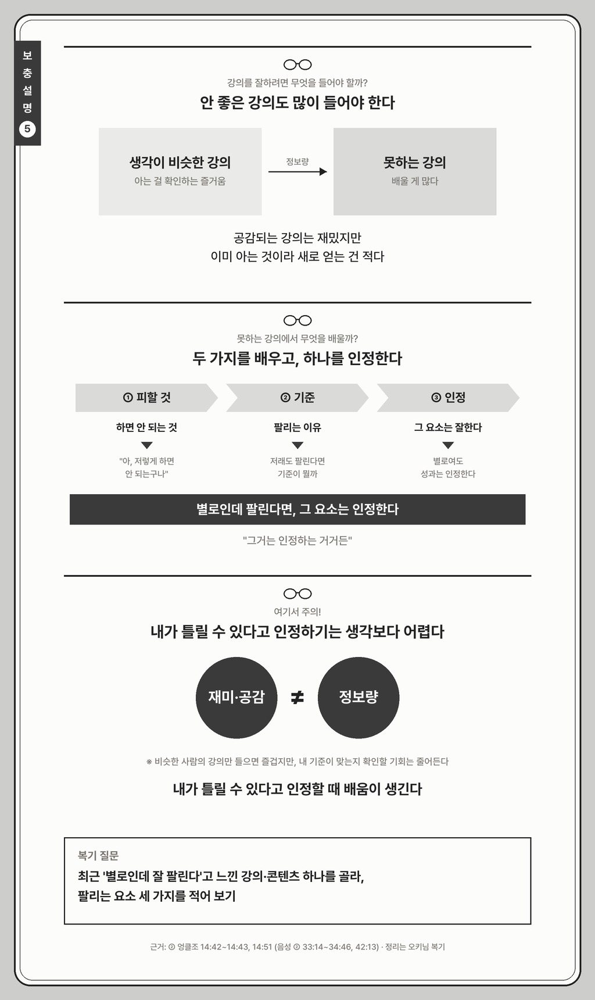
6편 상체는 빠르고, 하체는 어렵다엉클조 후반 17:17

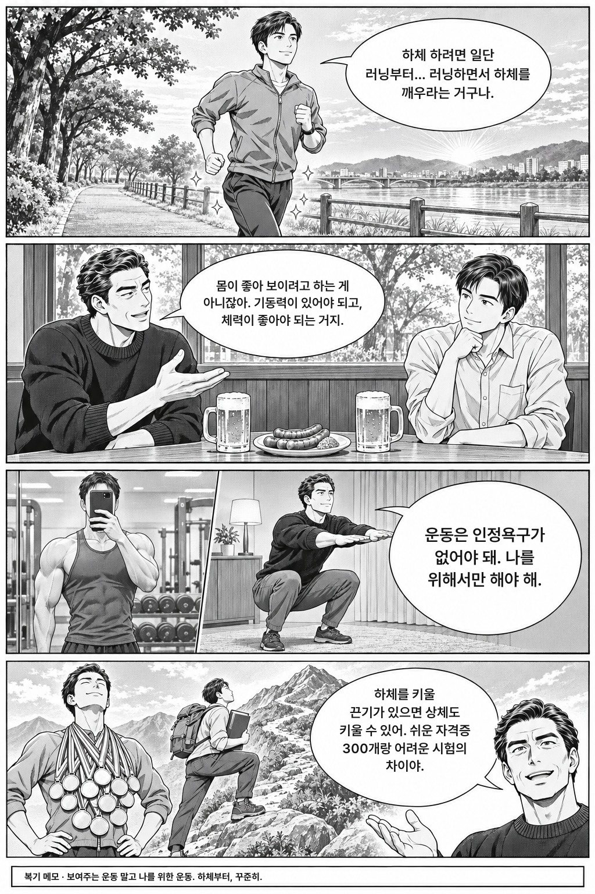
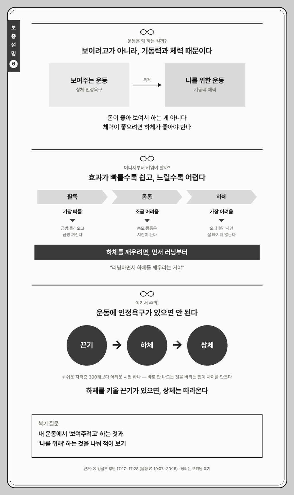
7편 힘이 남아서 일한다엉클조 후반 17:39
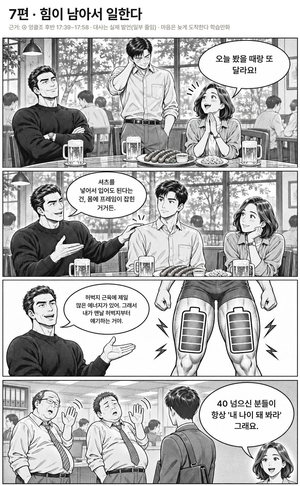